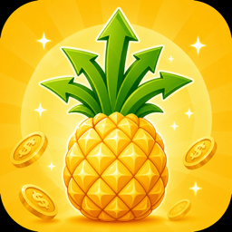
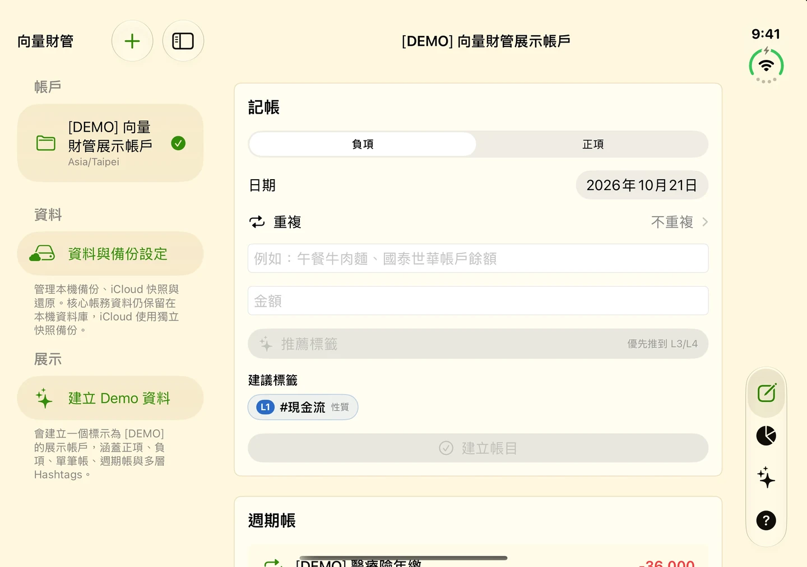
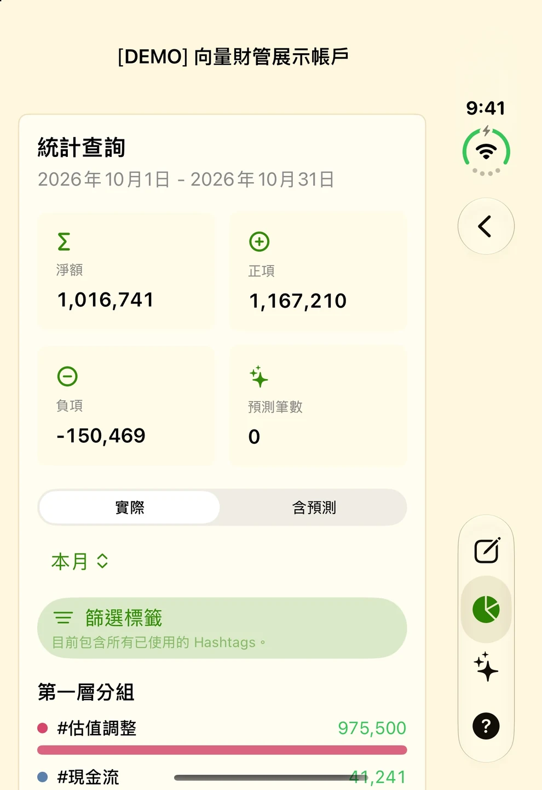
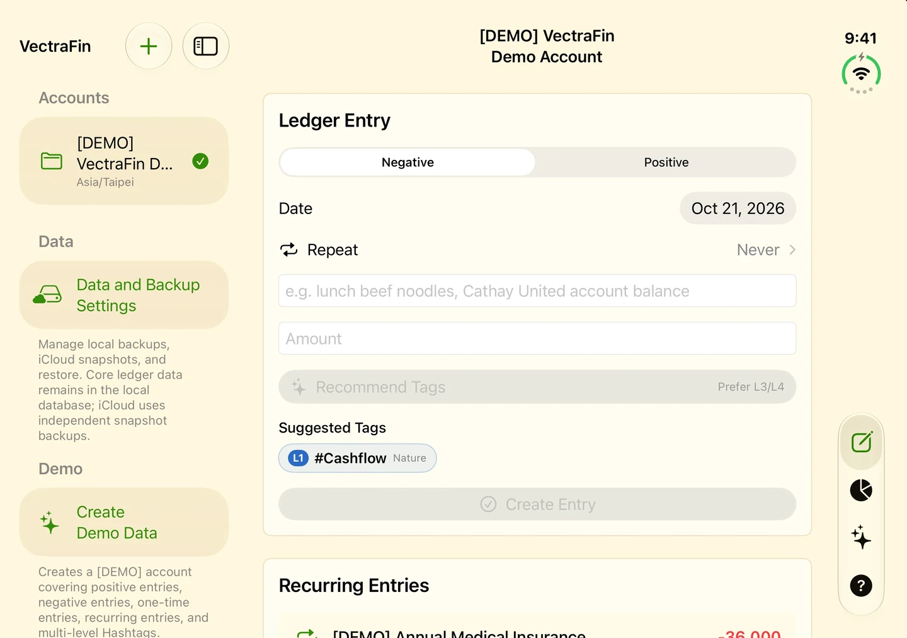
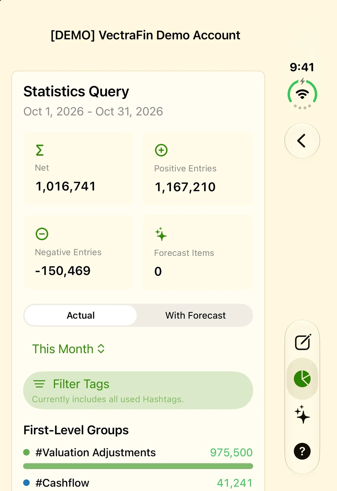

1.3 新版上架 · iPhone / iPad向量財管 VectraFin
用自己的標籤，把每一筆帳串成看得懂的財務全貌。
先記下一筆午餐費，再用 #現金流 #生活費 #伙食費 補上分類。從日常收支到資產與負債，依自己的邏輯整理，也能回頭搜尋與修正較早的帳目。

1.3 更新：找回舊帳，整理與還原更清楚
2026 年 10 月 22 日上架（台灣時間）。本次更新聚焦歷史查詢、資料恢復與不同螢幕的操作。
- 完整歷史搜尋與編輯：可搜尋完整帳目紀錄、編輯較早的帳目，並改善標籤篩選。
- 備份還原預覽與恢復點：還原前先查看備份內容，並改善資料庫升級、啟動恢復與同步。
- 輸入與日期修正：修正帳戶草稿、不同地區的金額輸入，以及週期日期計算。
- 更彈性的版面：改善 iPhone Duo 收合、展開、半摺疊、橫向與大字級的操作。
- 21 個介面語系：新增阿拉伯文、印地文、馬來文、荷蘭文、波蘭文、瑞典文與烏克蘭文。
- 可用裝置
- iPhone / iPad
- 下載方式
- 付費下載
iPhone／iPad 1.3，需要 iOS／iPadOS 26.4 或以上。資料預設留在裝置上，無須註冊；可選擇使用自己的 iCloud 帳號進行快照備份及同步。




從記下一筆帳，到理解整體變化
資料留在本機，備份方式由你選擇
不需要註冊或登入開發者帳號。財務資料預設儲存在裝置上，可使用本機備份、還原預覽與恢復點；需要時再選擇自己的 iCloud 帳號進行快照備份及同步。開發者不會透過自己的伺服器收集或檢視你的帳目。
畫面為 1.3 的 iPhone Duo 模擬器實際截圖，使用內建 Demo 資料。統計與預測依輸入資料和查詢條件計算，供個人財務管理參考。
VectraFin
Your tags, your records, a clearer view of your finances.
Record a lunch expense, then organise it with #CashFlow #LivingCosts #Food. Use your own structure for everyday spending, assets, and debts, and return to older entries whenever you need to find or correct something.

1.3: Find older entries and review restores more clearly
Released October 22, 2026 (Taiwan time). This update focuses on history searches, data recovery, and layouts across display sizes.
- Full history search and editing: Search your complete entry history, edit older entries, and filter tags more easily.
- Backup restore previews and recovery points: Review backup contents before restoring, with improvements to database upgrades, startup recovery, and sync.
- Input and date fixes: Fixes for account-specific drafts, regional amount formats, and recurring dates.
- More adaptable layouts: Improved iPhone Duo use when closed, open, partially folded, or in landscape, including larger text.
- 21 interface locales: Adds Arabic, Hindi, Malay, Dutch, Polish, Swedish, and Ukrainian.
- Devices
- iPhone / iPad
- Download
- Paid download
Version 1.3 for iPhone and iPad requires iOS/iPadOS 26.4 or later. Data stays on your device by default, with no registration. Optional snapshots and sync use your own iCloud account.




From a single entry to the bigger picture
Local data, with a choice of backups
No developer account or registration is required. Financial data stays on your device by default. Use local backups, restore previews, and recovery points, with optional snapshots and sync through your own iCloud account. The developer does not collect or view your records through developer-operated servers.
These are actual 1.3 app screenshots captured in the iPhone Duo simulator using built-in Demo data. Statistics and forecasts depend on your entries and query settings and are provided for personal financial organisation.